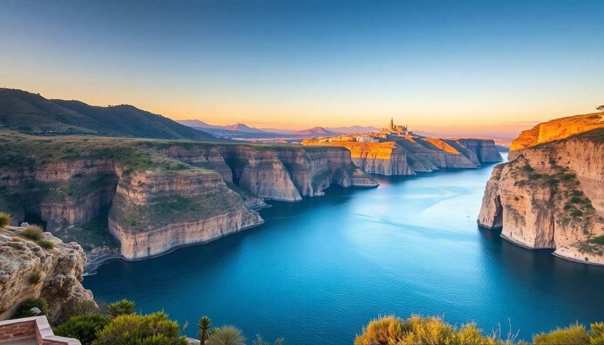

Best Day Trips from Málaga: Ronda, Nerja & Caminito del Rey

You can base yourself in Málaga and see three very different versions of Andalusia in a single day each. I did all three over a long weekend, and here’s what actually worked—and what didn’t.
Is Ronda worth the drive from Málaga?
Yes, but only if you go early. Ronda is the most dramatic of the three, sitting on a split cliff with the Puente Nuevo bridge spanning the 120-meter El Tajo gorge. I drove up from Málaga in about 90 minutes via the A-376, and by 10 a.m., the main viewpoint at Mirador de Aldehuela was already filling up. By noon, it was shoulder-to-shoulder.
The town itself is walkable in half a day. Start at the bridge, then head down the Alameda del Tajo park for a quieter view. For lunch, skip the tourist-heavy spots on Calle Virgen de la Paz and walk to Bodega San Francisco—a tiny place near the old town where I had a plate of jamón ibérico and a glass of local red for under €10.
- Puente Nuevo — the main attraction; walk across it early
- Mirador de Aldehuela — best photo spot, but crowded by 11 a.m.
- Alameda del Tajo — shaded park with cliff-edge views
- Bodega San Francisco — cheap, authentic tapas off the main drag
- Palacio de Mondragón — a Moorish palace with gardens, worth 30 minutes
Should you visit the Caminito del Rey as a day trip?
If you have a head for heights, yes. This is a 3-kilometer walkway pinned to the walls of the Gaitanes Gorge, about 90 meters up. It’s not as scary as Instagram makes it look—the path is wide, with handrails—but the sheer drop below gets your attention.
I booked the 10 a.m. slot through the official site (€10 entry, plus €2 for the bus from the north entrance to the south entrance). You need to arrive at the south entrance by car or taxi; I drove from Málaga in about an hour. The walk itself takes 2–3 hours, and you exit at the north entrance, where a shuttle bus takes you back to the parking lot. Bring water and wear shoes with grip—the metal grating gets slippery after rain.
- Book tickets online at least a week ahead; same-day slots sell out
- South entrance (El Chorro) — where you start; park at the restaurant
- North entrance (Ardales) — where you exit; shuttle bus runs every 30 minutes
- Hoyo del Tajo — a small bar near the south entrance for a post-walk beer
- El Chorro train station — a backup option if you’re coming from Málaga by train (but the walk from the station to the entrance adds 30 minutes)
What’s the best way to see Nerja in one day?
Nerja is the easy option—less altitude, more beach, and the Balcón de Europa viewpoint that juts out over the Mediterranean. I took the A-7 coastal highway from Málaga (45 minutes), and the drive itself is worth it, with cliffs dropping straight into the sea.
The main attraction is the Cueva de Nerja, a massive cave system with stalactites and a 32-meter column that’s supposedly the largest in the world. The cave is 4 kilometers from town, so drive there first (opens at 9:30 a.m.), then head to the Balcón for a late lunch. I ate at Restaurante El Pulguilla, a no-frills spot on Calle Carabeo where the grilled sardines were fresh and cheap.
- Cueva de Nerja — €10 entry; allow 1.5 hours; the guided tour is worth it
- Balcón de Europa — free viewpoint; best at sunset
- Calle Carabeo — the street for real tapas bars, not tourist menus
- Restaurante El Pulguilla — grilled fish, no English menu, locals only
- Playa Burriana — the main beach; fine for a swim if you have time
How do you get between Málaga, Ronda, and Nerja without a car?
You can do all three without driving, but it takes more planning. For Ronda, the Renfe AVE train from Málaga’s María Zambrano station takes about 2 hours and drops you right in Ronda’s center. It’s comfortable, but only runs 3–4 times a day, so check the schedule.
For the Caminito del Rey, the train to El Chorro station is the cheapest option (€8 one-way, 50 minutes), but you’ll walk 30 minutes from the station to the south entrance. A taxi from Málaga costs around €40 each way.
For Nerja, the ALSA bus from Málaga’s bus station runs hourly and takes 1 hour 15 minutes. It drops you at the Nerja bus station, a 10-minute walk from the Balcón de Europa.
- María Zambrano station — Málaga’s main train hub; Renfe AVE to Ronda
- El Chorro station — closest train stop to Caminito del Rey
- ALSA bus — direct Málaga to Nerja, €7 one-way
- Taxi from Málaga to Caminito del Rey — €40–50; split with another traveler
When is the best time of year for these day trips?
Spring (March to May) and fall (September to November) are ideal. I went in late April, and temperatures were 20–25°C—perfect for the Caminito del Rey walk and sitting outside in Ronda. Summer (June to August) is brutally hot, especially for the Caminito, which has no shade. Winter (December to February) is cooler and less crowded, but the Caminito can be closed after heavy rain—check the website before booking.
- April–May — best weather, wildflowers in Ronda’s gorge
- September–October — warm sea temperatures in Nerja, fewer crowds
- Summer — go early (before 9 a.m.) or skip the Caminito
- Winter — cheap accommodation, but some mountain roads may be icy
FAQ
Can I do Ronda and the Caminito del Rey in the same day? Technically yes, but I wouldn’t. They’re in opposite directions from Málaga—Ronda is southwest, the Caminito is northwest—and the driving alone is 3 hours round-trip. You’d rush both. Pick one per day.
Are the Cueva de Nerja and the Caminito del Rey kid-friendly? The Cueva de Nerja is fine for kids—it’s well-lit and flat. The Caminito del Rey has a minimum age of 8, and younger children might find the height unsettling. My friend’s 10-year-old did it without issue, but she’s not scared of heights.
Do I need to book the Caminito del Rey in advance? Yes, always. Tickets sell out days ahead in peak season. Book on the official website (not a reseller) for €10. Guided tours cost €18 but aren’t necessary—the walk is self-guided with signage in English and Spanish.
Conclusion
- Ronda is the most scenic but requires an early start to beat the crowds; drive or take the AVE train.
- Caminito del Rey is the most active day trip—book tickets online, wear grippy shoes, and bring water.
- Nerja is the easiest and most relaxed—drive the coastal highway, see the cave, then eat grilled fish near the Balcón de Europa.
- Spring and fall are the best seasons; summer is too hot for the Caminito.
- Without a car, use the Renfe train for Ronda, ALSA bus for Nerja, and a taxi or train for the Caminito.